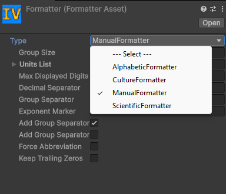

Formatters
All formatting and parsing in Infinite Value goes through the
IInfValFormatter interface. A formatter converts an
InfVal to a string and back. The project-wide default is set in the
Configuration asset and can be overridden per call or per component.
FormatterAsset
A FormatterAsset is a ScriptableObject that wraps any
IInfValFormatter instance so it can be assigned in the inspector and
shared across components.
Create one via Assets > Create > Infinite Value > Formatter, then select a formatter type from the dropdown and configure its fields.

Assign a FormatterAsset to the Default Formatter field
in the Configuration asset, or directly to an
InfValInputField component to override the default for that field.
Built-in formatters
Examples use default settings. Each formatter's fields are listed in the Public API.
| Formatter | Use it for | Examples |
|---|---|---|
CultureFormatter | Following the player's language: separators and units come from a culture. The default formatter. | 1,234,567.5 (en-US), 1 234 567,5 (fr-FR), 1500兆 (ja-JP) |
ManualFormatter | Setting every detail yourself: units, separators, exponent marker. | 1,234,567.5, 1.5P |
ScientificFormatter | Scientific notation. | 1.2345675e+6, 1.5e+15 |
AlphabeticFormatter | Idle games: short letter suffixes, a for thousands, b for millions, aa after z. | 12.35a, 1.5ab |
ConwayGuyFormatter | Numbers written as names, at any size. | 1.235 Million, 2.3 Quinquadecillion |
Formatting into parts
Format can hand the pieces of a value back separately instead of as one string, for
laying the number and its unit out on their own.
List<string> parts = new List<string>();
value.Format(parts, 2);
numberLabel.text = parts[0]; // "10.1"
unitLabel.text = parts[1] + "Wh"; // "kWh"
The first part is always the number; how the rest is grouped is up to the formatter. The built-in
formatters give ["10.1", "k"] for a unit (["1.5", " ", "Million"] for
ConwayGuyFormatter), ["1.23", "e", "-6"] for scientific
notation and ["999"] for a plain value. Joined back together, the parts are the same string
ToString() returns, except that a part never starts with the space before a name: asked for
2 parts, ConwayGuyFormatter gives ["1.5", "Million"].
partCount of 0 or less asks for the formatter's natural split. A positive value asks for
exactly that many parts, up to InfValFormatHelper.maxPartCount (16), merging the tail or padding with empty strings, so a layout with a fixed number
of fields never has to check Count. The list is cleared and refilled, so the same one can be
reused across calls instead of allocating a new one.
Custom formatters
Implement IInfValFormatter to build a fully custom formatter. Mark the
class [Serializable] so it can be wrapped in a
FormatterAsset and edited in the inspector.
using System;
using InfiniteValue;
[Serializable]
public class MyFormatter : IInfValFormatter
{
public string Format(in InfVal value) { ... }
public bool TryParse(string text, out InfVal result) { ... }
public bool IsValidPartialInput(string text) { ... }
}
Format(in InfVal, List<string>, int) has a default implementation that puts the whole
output in one part. Implement it to support formatting into parts.
Use the static InfValFormatHelper class for the heavy lifting. It
exposes Format, TryParse, Parse,
IsValidPartialInput, GetDecimalSeparator,
GetGroupSeparator, AreUnitsValid,
defaultExponentMarkers, and maxPartCount.